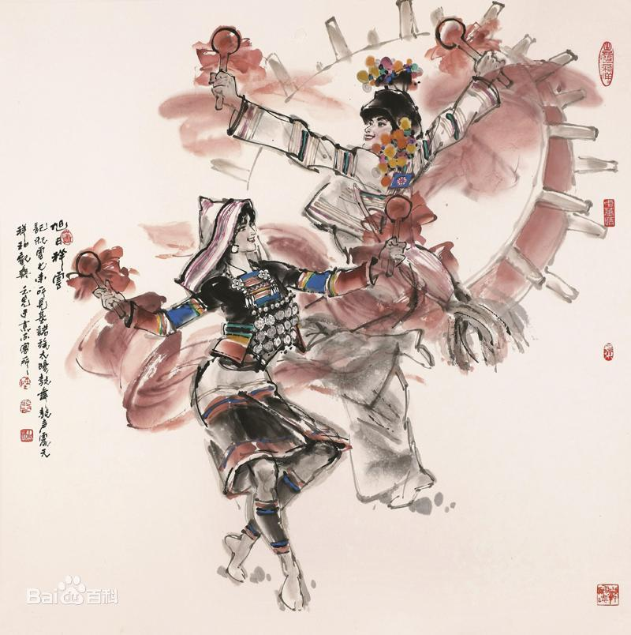

- 民族简介
- 文化习俗
- 历史发展
- 旅游介绍
基诺族
基诺族 基诺族是云南省人口较少的7个特有民族之一，民族语言为基诺语，属汉藏语系藏缅语族彝语支，没有文字，过去多以刻木、刻竹，记数、记事，通用汉语。 基诺族主要聚居于云南省西双版纳傣族自治州（以下简称西双版纳州）景洪市基诺山基诺族民族乡及四邻的勐旺、勐养、勐罕，勐腊县的勐仑、象明也有少量基诺族散居。 1979年，基诺族被正式确认为单一民族，根据2010年第六次全国人口普查统计，基诺族总人口数为23143人 。
基诺”是本民族的自称，可释意为“舅舅的后人”或 “尊重舅舅的民族”。 过去汉语译为“攸乐”，故又习称其居住的基诺山为“攸乐山” 。">
信仰
基诺族除具有一定的祖先崇拜和对诸葛孔明尊奉外，最具特色、占主要地位的宗教观是万物有灵思想。 基诺族认为山有山神，地有地神，寨有寨神，谷有谷神。每年祭祀的活动很多，传统节日、喜庆丰收，生儿育女、天灾人祸都要祭祀神灵。 一年中最大的祭祀活动是“特懋克” 节时的祭太阳鼓。太阳鼓是基诺 族最神圣的祭器和乐器，一般有两面，分公鼓和母鼓。他们视太阳鼓为神灵的化身和村寨的象征。祭祀太阳鼓，目的是祈盼它能保佑全寨人丁兴旺、五谷丰登。祭祀活动还有“喏嫫洛”祭创世神阿嫫杳孛和“好希早”节时祭祀祖先。还有叫谷魂、“祭大竜”、“祭小竜”等十多种。
建筑
基诺村寨喜建于平缓向阳的小山坡上。房屋是用竹木和茅草修建的“干栏式”竹楼，貌似孔明帽，相传建房式样是孔明教的。竹楼由木架支撑，用粗木做梁、柱，连榫为架，不用金属连接。楼板和四壁用竹片排列铺成，将茅草编成草排覆盖在楼顶上。竹楼上层住人，下层不设四壁，用于堆放工具、什物和家畜栖息。竹楼上有前后两个晒台，前晒台连着楼梯口，后晒台是晒衣、纺织之处。楼上用篾笆隔开，里屋按人口多少隔成数间卧室，外屋为“客厅”，兼厨房、饭堂，“客厅”中间有火塘，三块锅桩石作三足鼎立状，火塘上面悬挂着竹编吊笼，放置食品。火塘和锅桩石是家中神圣之物，饮茶、谈天、商谈家务、安排生产都在此进行。竹楼屋脊两头装饰着茅草扎的耳环花，一般群众的竹楼共饰6朵，村寨“长老”家则饰10朵。装饰着耳环花的竹楼使人一眼就识别出其主人的社会地位和身份。
传统基诺族房屋与现在稍有区别，大致有两种：一是有一个火塘的竹楼，内居一个父系家庭的全体成员五六人至十余人。据说20世纪40年代国民党军队进山镇压基诺人民起义前，许多村社都存在着有五六十人的父系大家庭，几代人在一个男性家长领导下集体劳动，吃大锅饭。另一种是竜帕寨的长方形竹楼，长约三四十米，宽8至10米，楼内共居着同一父系氏族的数代人，进楼有一通道，用石头砌边的土台上等距离并排着各个小家庭火塘，火塘两旁是他们的卧室，进门右边第一间为家长寝室。这种大长房虽然也有一个男性家长，但各小家庭已有了自己的家庭经济，按小家庭为单位独立消费。1940年时，竜帕寨的一个大竹楼曾住着同一父系氏族的31户，共125人。每个竹楼都有一个男性家长——“卓巴”，假如此家的男子去世而无“卓巴”，则拆掉房子，妇女必须改嫁或回娘家，没有继承门户的权利。这种共居分炊的习俗生动地反映了父系大家庭向小家庭村社过渡的情形 。
服饰
基诺男子通常上穿无领无扣对襟黑白花格麻、布褂 ，上衣背面正中缝上一块方形红布，上绣一朵美丽的太阳花（一说是孔明的八卦图案），下身着白色或蓝色宽大长裤或短裤，扎宽布腰带。新中国成立前，多数男子头顶留三撮头发：中以纪念武侯，左右以怀父母。有的说，左为父母留，右为自己留。 女子上身穿无领镶绣对襟杂色小褂，下系镶红边黑色前开合短裙，现在也有改穿长裙的。基诺妇女习惯裹绑腿、挽发高髻，她们头上还戴有白厚麻布，后披翅长及肩部的披风尖顶帽，显得既庄重大方又活泼俏丽。过去男女均赤足，喜欢嚼食槟榔或用花梨木黑汁染牙。男女皆两耳穿孔，内塞竹管、木塞，以耳孔大为美 。
饮食
基诺族习惯于日食三餐，以大米为日常主食，杂以玉米、瓜豆 等。基诺族食用大米很讲究，要吃好米、新米，陈仓米多用来喂养家畜或做烤酒。喜吃青玉米。早餐通常把糯米饭用手捏成团吃，午餐多把米饭用芭蕉叶包好带到地里随时加盐和辣椒食用，也有直接把米带上山，就地砍竹筒、采集野菜，把米和菜放在竹筒里烤熟而食。晚餐除主食米饭外，还备有一些菜肴，其中有瓜豆及随时采集和猎获的山菜野味，家庭饲养的畜禽只在婚丧礼祭时才能宰杀，平时肉类多来源于狩猎所获。 基诺族喜酸、辣、咸口味，尤其喜酸。酸笋是主要的家常菜。把格里罗果捣烂后加辣椒、盐成为每餐必备的调料。基诺族的烹调方法主要是烤、煮、炒。竹筒烤饭、酸笋煮狗肉、苦刺果煮牛肉、火烧飞蚂蚁、烤蜘蛛、竹鼠煮稀饭、芭蕉叶烧肉、金条肉都是基诺族最具特色的风味佳肴。基诺族普遍喜好饮酒，民间有不可一日无酒的说法。所饮用的酒大都是自家用大米或玉米酿制。在酿制过程中，通常要加一些锁梅叶等植物，酒呈浅绿色，带有一种植物的自然香味，有健脾强身之功效。基诺人多喜喝老叶茶，喝茶时一般都将老叶揉炒后放入茶罐加水煮至汤浓才饮用 。
历史
关于基诺族的族源，有土著说和南迁说两种。“基诺”一词源于基诺族 先民在杰卓山居住的时代，当时出现了“基诺洛克”的名称，“基”为舅舅，“诺”为跟在后面的，直译是“跟在舅舅后面的人”。相传基诺族的发祥地是“司杰卓米”。它是基诺山东部边缘一座海拔近1440米的高山，现在称为孔明山。至今，阿哈、阿希两支系以及居住在勐旺乡补元行政村的乌优支系居民，回顾祖先迁徙路线，都不约而同地把发祥地指向这座高山。这说明在很早以前，基诺族的先民就生活在基诺山及周围地区。
当地人传说，在远古的时代，洪水淹没大地，只有一对善良勇敢的同胞兄妹玛黑、玛纽受仙人保护和指点，幸免于难， 经过各种艰难波折，最终结为夫妻。仙人曾赐予他们10颗葫芦籽，种下后只长出1颗，结出的100个小葫芦中，仅长成1个，却长得像房子一样大，里边还有人在说话，打开一看，葫芦里出来4种人，先出来的是基诺人，依次而出的是汉人、傣人、哈尼人（有的说还有第五种人，是布朗人）。后来，他们各自找到了乐土。从这个传说里，可以反映出基诺族同汉、傣、哈尼等民族在远古时代的密切关系。
基诺族山寨
基诺山寨作为全国唯一一个最全面集中展示中国第56个民族－基诺族文化为主题的文化体验地，现已被确定为西双版纳州基诺族传统文化保护区。 基诺山寨景区以巴坡自然村寨为依托，将基诺族浓郁的民族风情、历史文化、神秘的原始宗教文化、古朴的生产生活方式、独具特色的基诺族民居、服饰及秀美的自然风光融为一体展现给游客……引人入胜，让人留连忘返。 景区主要游览内容有：“牛角字”、“大鼓门”、“牛头路”、“祭祖先玛黑、玛妞”，“创世女神阿膜腰北塑像”、“太阳花坛”、“大公房基诺文化博物馆”、“基诺大鼓舞”等等。 基诺山寨正门的造型源于基诺族的图腾———基诺大鼓，人们从大鼓门中走过，可以带来吉祥如意。